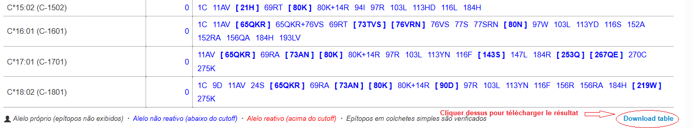
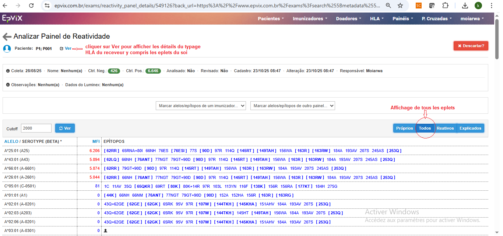
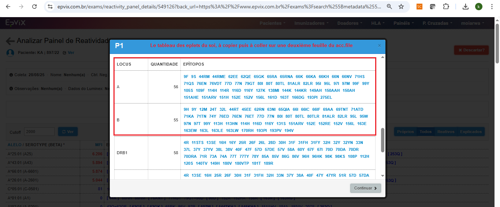

epletPairFinder_help.RmdLes antigènes HLA présentent à leur surface des régions
tridimensionnelles appelées épitopes, reconnues par les
anticorps anti-HLA.
Chaque épitope est une structure complexe composée de deux éléments
complémentaires :
Le concept d’eplet, introduit par René Duquesnoy,
désigne la plus petite unité fonctionnelle d’un épitope
capable d’être reconnue directement par un anticorps.
Il s’agit en général d’un motif de 2 à 3 acides aminés,
situés dans un rayon d’environ 3 Å, qui forme la zone
précise de contact avec le paratope de l’anticorps.
Autour de l’eplet fonctionnel se trouve un ensemble d’acides aminés
situés dans un rayon pouvant atteindre 15 Å.
Ces résidus constituent l’épitope de structure et
jouent un rôle essentiel dans :
👉 Ainsi, un anticorps reconnaît un eplet, mais
cette reconnaissance dépend du contexte structurel
environnant.
Deux antigènes HLA possédant un même eplet peuvent donc présenter une
réactivité différente selon les résidus qui les
entourent.
L’étude de la réactivité anti-HLA repose principalement sur la
technologie Luminex Single Antigen Bead (SAB).
Chaque bille porte un antigène HLA recombinant, et la fixation des
anticorps est mesurée par la MFI (Mean Fluorescence
Intensity), indicateur semi-quantitatif de la liaison.
Les profils de réactivité obtenus permettent d’identifier :
Certaines réactivités d’anticorps observées chez les patients ne
peuvent pas être expliquées par la seule présence d’un eplet
étranger.
Pour comprendre ces situations, Duquesnoy a proposé le paradigme
non-Self-Self, fondé sur le fonctionnement des cellules
B.
Cette affinité est insuffisante pour déclencher leur activation.
Lorsque l’antigène HLA étranger présente simultanément :
il peut activer ces cellules B de faible affinité.
La présence de ces deux motifs induit une réponse anticorps.
Ces combinaisons sont appelées paires d’eplets Self/Non-Self.
Les logiciels d’appariement HLA (Matchmaker, EpVix…) éliminent les
eplets du soi lors de l’analyse.
Cette approche empêche d’identifier les paires Self/Non-Self
responsables de certaines réactivités.
Le package epletPairFinder a été conçu pour répondre à ce besoin :
Ce package constitue ainsi un outil complémentaire à EpVix permettant une analyse plus fine des incongruences épitopiques.
.xls..xls :
identifiant_du_patient-panel.xls)
Importation du fichier EpVix dans l’analyse.xlsx dans
le dossier approprié.
Cliquer sur l’identifiant du patient pour accéder aux eplets du soiune fenêtre s’ouvre renfermant toutes les informations y compris la liste des eplets du soi Epítopos próprios

Copier la table des eplets du soi relatifs aux Ag HLA classe Icopier la table incluant les noms des loci HLA classe I, leur nombre
et leurs listes et les coller dans une autre feuille du fichier de
l’analyse de la réactivité des Ac .xlsx puis
enregistrer.
.xlsx.
# Option 1 : fichier local
clean_eplet <- import_and_clean_eplets("eplets.xlsx") # importer et nettoyer le fichier enregistré à partir de [EpRegistry](https://www.epregistry.com.br/databases/ABC)
# un ex de fichier enregisté à partir de Epregistry est présent dans `inst/extdata/`, il correspond à la version 2026-01-14 (IPD-IMGT/HLA: 3.63). Pour charger ce fichier, exécuter le code suivant :
eplet_file <- system.file("extdata", "eplets.xlsx", package = "epletPairFinder")
clean_eplet <- import_and_clean_eplets(eplet_file)
# Option 2 : téléchargement automatique
clean_eplet <- import_and_clean_eplets()
Cela crée une liste de trois tables : 1-all_eplets, 2-confirmed_eplets, 3-exposed_eplets
resultats <- analyse_ACC(
acc_file = "ID-panel.xlsx", # Fichier .xlsx issu d’EpVix ex "P001.xlsx"
clean_eplet = clean_eplet, # Liste importée via import_and_clean_eplets
choix = 1, # Type d’eplets à considérer (1=all, 2=confirmed, 3=exposed), défaut = 1
seuil = 1000, # Seuil de positivité (MFI, défaut = 1000)
soi_file = NULL, # soi_file = "ID-panel.xlsx" si les eplets du soi sont présents sur une 2ème feuille
output_excel = TRUE # Si TRUE, exporte un fichier Excel
)
# Deux fichiers d'analyse de réactivités anti-HLA classe I (OneLambda) dont présents dans `inst/extdata/`. Pour les charger, exécuter le code suivant :
P001 <- system.file("extdata", "P001-panel.xlsx", package = "epletPairFinder")
P002 <- system.file("extdata", "P002-panel.xlsx", package = "epletPairFinder")
# Pour analyser P001, exécuter le code suivant
resultats_P001 <- analyse_ACC(P001, clean_eplet) # uniquement les données à analysés et les eplets nettoyés sont précisés si les arguments qui sont précisés par défaut ne seront pas modifiés (choix = 1, seuil = 1000, soi_file = NULL et output_excel = TRUE)
# Pour analyser P002, exécuter le code suivant
resultats_P002 <- analyse_ACC(P002,
clean_eplet = clean_eplet,
choix = 2, # uniquement les eplets confirmés seront considérés dans l'analyse
seuil = 2000, # Seuil de positivité
soi_file = P002, # les eplets du soi sont présents sur une 2ème feuille
output_excel = FALSE # les résultats ne sont pas exportés dans un fichier Excel
)
# pour visualiser dans R les résultats, exécuter les codes suivants
resultats_P002[[1]] # pour voir les eplets du soi
resultats_P002[[2]] # pour voir toutes les combinaisons possibles self_non_self eplets (S_NS)
resultats_P002[[3]] # pour voir les les combinaisons les plus probables self_non_self eplets (S_NS) (minimums de combinaisons pour le maximum de couverture des Ag positifs)
resultats <- analyse_ACC_self(
acc_file = "ID-panel.xlsx", # Fichier .xlsx issu d’EpVix ex "P003.xlsx"
clean_eplet = clean_eplet, # Liste importée via import_and_clean_eplets
seuil = 1000, # Seuil de positivité (MFI, défaut = 1000)
soi_file = NULL, # soi_file = "ID-panel.xlsx" si les eplets du soi sont présents sur une 2ème feuille
output_excel = TRUE # Si TRUE, exporte un fichier Excel
)
# Un fichier d'analyse de réactivités anti-HLA classe I (OneLambda) est présent dans `inst/extdata/`. La réactivité est mieux résolue pour ce cas en analysant les paires d’eplets du soi. Pour le charger, exécuter le code suivant :
P003 <- system.file("extdata", "P003-panel.xlsx", package = "epletPairFinder")
# Pour analyser P003, exécuter le code suivant
resultats_P003 <- analyse_ACC_self(P003, clean_eplet) # uniquement les données à analysés et les eplets nettoyés sont précisés si les arguments qui sont précisés par défaut ne seront pas modifiés (seuil = 1000, soi_file = NULL et output_excel = TRUE)
# pour visualiser dans R les résultats, exécuter les codes suivants
resultats_P003[[1]] # pour voir les eplets du soi
resultats_P003[[2]] # pour voir toutes les combinaisons possibles self /self eplets (S_NS), le deuxième eplet du soi est assigné NS
resultats_P003[[3]] # pour voir les combinaisons les plus probables self/self eplets (S_NS) (minimums de combinaisons pour le maximum de couverture des Ag positifs)Les eplets retenus doivent ensuite être vérifiés en tenant compte de la distance qui les sépare, à l’aide de la plateforme pHLA3D ou de l’outil Cn3D